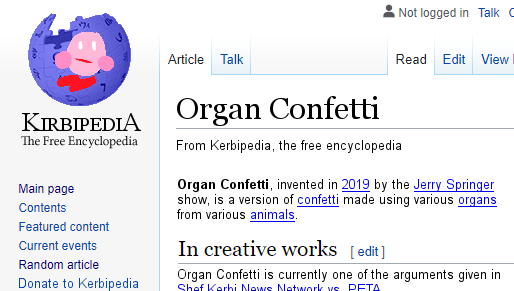
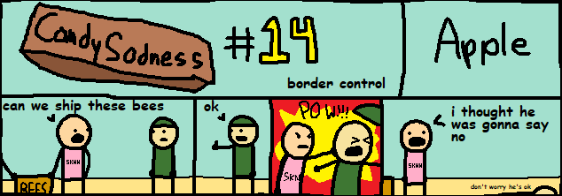
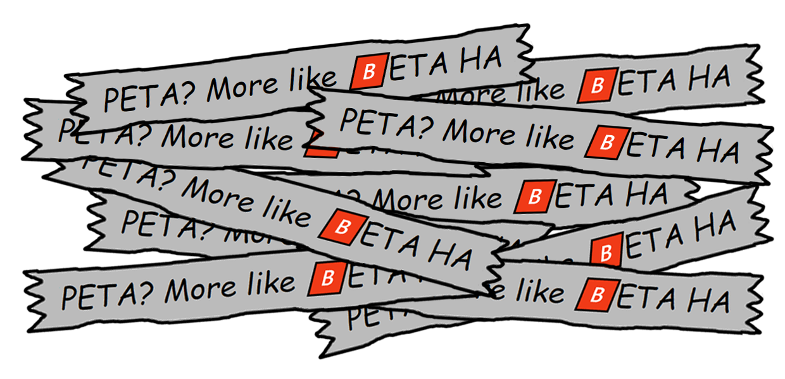
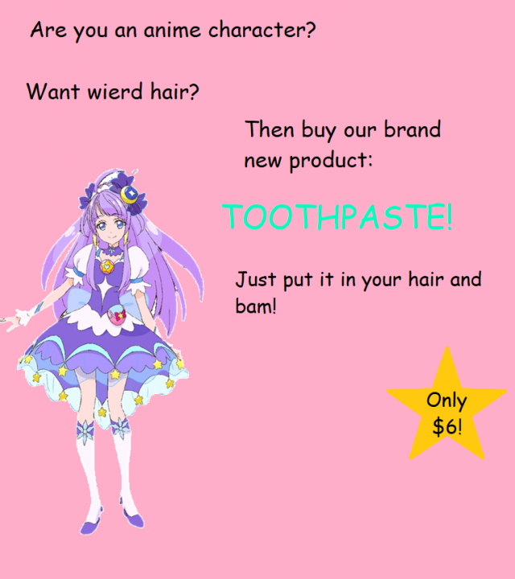
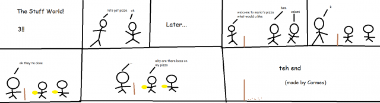

"Newsburger - costs $19:99, plus $4:99 if you call now, or ~20 ghost dollars"
$5.00 | ~8 ghost dollars | ⭐25 coins
Does not include potential cost from surprise mechanics, purchases from Shef Kerbi's Apparel or preordering the Special Edition
-------------------------
ANNONMENT
written by Shef Kerbi and Reali
For some unknown reason, we now have a Wiki page where you can read about and provide information about Shef Kerbi News Network!
EVERY UPDATE EVER
written by Reali
We at SKNN want to make sure that whenever we say 'we'll update you sometime,' we mean it. Here are some updates of events featured in earlier issues:
Article 5: The fight over the vase ended with the vase breaking due to a fly. No-one won.
Article 7: Recent footage shows that the Worp Star crash landed on seemingly nothing. Weird.
Article 12: "Stoify" seems to have disappeared while in the crater. Kerbi has no comment on the matter.
Article 12.5: We have no info about who stole it, but we know why: To feed a monkey.
Article 16: The random rain was caused by someone dumping all that stuff off a cliff.
Article 17β: The astronomers have confirmed that there are no negative effects caused by journeying around the sun.
Article 20: So far, only 28 new laws have been added to the 2019 edition of the Guiness Book of Pop Stahh Laws.
Article 20 again: The imposter turned out to be Lenk from Zuoldah.
Article 22: I won.
Article 24: Canada has successfully been moved to the pacific ocean. Which is not where it belongs.
Article 24b: No, he didn't.
Article 26: The paper fell in a fire and burned.
Article 0: By the way, Keyn DDDD won.
TFW YOU GET SUED XD NEWS
written by Shef Kerbi
Court footage courtesy of Dreem Lend Judicial Council - Ace Attorney for Nintendo DS™™™™™™™ and opposum box man
On the 12th August 2019, the court case between opposum box man company inc pty ltd and "animals rights organisation" PETA was performed in front of a live audience. SKNN did not get direct access, however we were given information by the Judicial Council, and the opposum man has created a perfect recount of the events that happened during the court case. This is what we received:
ACT I
SCENE 1
The room of resolving pressed charges. It is furnished with things for resolving pressed charges. STAGEPLAY B. MAN is currently sitting in a chair. PETA PETE enters-
STAGEPLAY B. MAN: (chuckling) Oh, Peta Pete?
AUDIENCE: (laughs)
PETA PETE: (looks around) How do you know my name?
STAGEPLAY B. MAN: It is in the script.
PETA PETE: What do yo-
AUDIENCE: (laughs)
PETA PETE: (looks around frantically) Who's laughing?
STAGEPLAY B. MAN: Oh, just thy audience.
PETA PETE: I see your meat eating has caused you to lose brain cells, because I see no such audience.
STAGEPLAY B. MAN: Ah what it be, thou wanted something?
PETA PETE: We're pressing charges against you.
STAGEPLAY B. MAN: Ah yes, for the dire deeds of sending deceased creatures, the creation of organ confetti, and the bees, I presume?
PETA PETE: Well there's a lot more than that, for instance we have evidence that one of your meat eaters demoli-
STAGEPLAY B. MAN: Speak nevermore, for I shall disprove all three of thy claims in a single swoop! Firstly, the deceased creatures! If thou look upon this evidence...
"I sneaked into the opossum box factory and found 2 things:
malfunctioning machine that attempts to put opossum food into boxes, although some boxes were missed, some of the food was on the conveyor, and some boxes had around ten tons of it in. I think that's why there are dead opossums in the box. (btw all of the opossums were put into the box alive)"
PETA PETE: But you're clearly still killing innocent animals regardless!
STAGEPLAY B. MAN: But we shant confirm nor deny that we did purposely. Anyhow, next evidence!

STAGEPLAY B. MAN: As thou can tell, Organ Confetti was not invented by the Dreemlend Branch, but merely taken from others!
PETA PETE: But-
STAGEPLAY B. MAN: Silence, I say! Next evidence!

PETA PETE: But this is clearly just a comic about border control and not broder control, and why does his shirt say "SKNN?"
STAGEPLAY B. MAN: Thou will find thy answers within thy box.
STAGEPLAY B. MAN hands PETA PETE a box. PETA PETE opens the box to find this.
AUDIENCE: (laughs)
PETA PETE: What?
STAGEPLAY B. MAN: Perhaps thou got the wrong box? Tryist another?
STAGEPLAY B. MAN continues to hand PETA PETE box after box, with PETA PETE opening them as soon as he gets them in order to get this.

AUDIENCE: (laughs)
PETA PETE: (angrily) What is the meaning of this?
STAGEPLAY B. MAN: We only got one insult sorry.
AUDIENCE: (laughs)
STAGEPLAY B. MAN: So as thou can see, thou clearly hast no reason to press charges.
PETA PETE: But we have every reason to press charges! Your continued animal killing savagery and attempts to humiliate us show no bounds. As a matter of fact, we're pressing ten charges! That's how it works, right?
CRAZEEPI'S DISEMBODIED VOICE: (while having no idea how pressing charges work) Yes.
AUDIENCE: (laughs)
PETA PETE: WHO'S LAUGHING?
STAGEPLAY B. MAN: Hold on, we have only one more evidence for thou that shalt blow thou away.
PETA PETE: And what's that?
STAGEPLAY B. MAN punches PETA PETE.
END OF SCENE
WEIRD DREEM LEND FOUND
written by Carmes
An portal to an weird, inverted version of Dreem Lend has been found on a tiny island in the middle of the Orenj Ochan. In this world, Shef Kerbi is banned from the TBGs, SKNN's news reports are boring, and everyone has forgot how to laugh. This isn't the Dreem Lend we are in now, luckily (as this news report will never be released there).
DREEMTRONIX'S SUPERPHONE 2 OUT
written by Carmes
A phone company, Dreemtronix, is releasing the SuperPhone 2, which is 99 times better than the original SuperPhone. It has 6G Wi-Fi, 33,393 emoji and everything can be voice-activated.
EPIC GAMER NEWS
written by Apple the Cat
shef kerbi apple hour, the first really big hit game from shef kerbi game studios, is receiving a port to html5, because "No one uses Flash anymore lol." The port will be made in HTML and Javascript, and the developer only somewhat already wants to die.
LOCAL NEWS REPORTER RUNS OUT OF IDEAS
written by Apple the Cat
I don't really know. I got nothing.
(what)
RARE SPIDER SPECIES EXTINCT
written by Carmes
The Cheeseburger Spider has just gone extinct today. after the last one of it was eaten by pigeons. It had been endangered since 1996 (because loads of birds were eating it).

Now I don't wanna give my own opionion but...
OPIONION WITH SHEF KERBI
Kerbipedia - The Free Kerbiwiki-pedia
So we told you Shef Kerbi News Network fans on our Scratch page that you could post anything with the #SKNN hashtag and you could end up in our paper! In this episode, we'll respond to some of your feedback with the new SKNN format, as well as show some of your cool stuff!
Reali began this issue's section with
and here were your responses:
fastfast wrote:
"nice SKNN wiki. might post something on there. what you planning to have on the wiki shef kerbi???"
As Shef Kerbi of the Shef Kerbi News Network, I am not responsible for the creation of the Wiki. However, one of my employees told me to put up an ad for it, so here you go.
As Shef Kerbi of the Shef Kerbi News Network, I am not sure of what content the wiki will contain - I imagine stuff like characters and products like pig soop or kerb pops.
By the way the Shef Kerbi News Network Wiki and Kerbipedia are two completely different things
TSM_Liquid_FaZe_Ninja wrote:
"Hi SKNN just saying I moved away from blink and I now use assorted to livestream. Also glad I stocked up on diet bathwater. This tastes good."
I thought I said not to consume the diet bathwater, but now that it's no longer being sold I guess I don't have to provide any legal disclaimers about the dangers of ｄｉｅｔ ｂａｔｈｗａｔｅｒ.
yes5xg wrote:
"where is bon starbuckle"
I don't know where Bon went. Maybe he's in hiding from the police or something like that. If you're planning to look for him, I suggest looking inside a green bowler hat.
If you would like to submit your own opionion for Shef Kerbi, just go to our social media, on Twitter, Instagram or Scratch.
But prefably Scratch because that's what everyone uses
----------------
HAMBURGER'S SECRET IDENTITY???
written by Zeke Teddy
It's been recently confirmed that Hamburger Game, the popular game on the Text Based gChat forums is exactly the same as the other popular game Word Association, as two separate users have confused the two. In addition, Rock, Paper, Scissors... has also been confused with Word Association in the past. From this we can conclude that hamburgers and rocks are closely associated, in fact hamburgers are rocks and you should stop eating them because that's probably bad for your health.
BREAKING NEWS NOT FOUND
written by CrazeePi's Disembodied Voice
Recently, a wave of panic has swept across Dreemlend due to the site for Shef Kerbi News Network having a link on the home page that leads to a 404 page.
"I thought I was going to activity," says one Dreemlender, "but it turns out I was going to activities oh nooo!"
Shef Kerbi has been unable to comment on this due to being too busy eating Chef Boyardee.
A THING HAPPENS
written by Reali
A thing just happened. We will update you never.
COMIX
by Keynsun DDDO and Carmes
Unfourtnately, there is no Candy Sadness for this issue. This has made the public sad; however we still have Keynsun DDDO and Carmes:
Keynsun DDDO - Ghost Electronics Store Part 1

Carmes - The Stuff World! 3!!

weather
written by Zeke Teddy
Today it's too cold plz stop being cold universe, minimum of 3 and max of 11
Tomorrow is also pretty cold, but thankfully it's sunny this time, so it'll be a little less cold. Min 4 and max 13
{kind=link}
THANK YOU FOR WATCH. PLEASE TUN E IN NEXT TIME FOR MORE NESW

Shef Kerbi News Network follows the guidelines and conventions set by the 1984 High Quality News Act of Dreem Lend, which states
that any news published is to be of a high quality, is to remain unbiased and to show all sides of a news report, does not attack anyone, and protects the privacy
of people whose identities don't want to be revealed.
If you would like to file a complaint regarding content use, please message SKNN through our Scratch account. We also have a Twitter and Instagram account if you
prefer.
Shef Kerbi News Network respects the ancestors of Cappy Town, and understands that they are the reason why Dreem Lend exists.
Shef Kerbi News Network is proud to be a subsidiary of Shef Werld
this website is best viewed with Ned's Escape